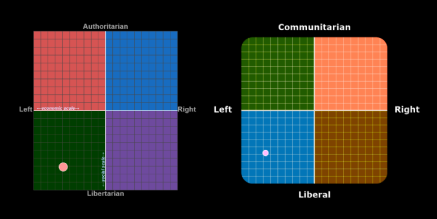

This is the sPoOkY and cOnTrOvErSiAl blog where I talk about my ethical thoughts and opinions.
I've attempted to keep my discussion of these topics civilised and friendly.
This blog is not an attempt to force my opinions on anyone, if you do not care about my thoughts
then read some other blogs or check out another page.
Otherwise, I recommend you read from the top of the list downwards.
I've heard many religious people say that you cannot have morals without them being based in religion.
I think that is a tad biased and I will now explain what my secular morals are based on.
Qualia are instances of subjective conscious experiences, that are difficult or impossible to explain to someone
who does not share those experiences. An example of this is the perception of the colour green. You cannot explain
green to a blind person, as they would have no frame of reference.
Some of the most important examples of qualia are painful sensations. You could not explain how pain truly feels to
an alien that has never felt pain, but you know from feeling it yourself that it is a very bad feeling that should
be avoided. There are many things that we do and do not understand, but the one thing that we can know to be true
is that we feel qualia, and we feel pain.
Following this, the most concrete basis of morality for me is then that pain is bad and inflicting pain on others is bad.
This isn't exactly a shocking revelation, but for some people this ethical basis needs to be spelt out. From this
basis, I then look at certain actions and judge whether or not they are immoral.
Every culture has societal norms, many of which impose ethical ideas and biases onto the people that follow them.
Some of these norms promote ideas supported by my ethical basis, such as killing and stealing being
punishable offences, and rudeness towards strangers being frowned upon. Other norms however promote ideas that are more
dangerous, such as the widespread mentality that weird things are immoral.
Things that may seem uncommon, uninteresting, or just make you cringe, are not necessarily causing harm to yourself or
others. Actions are only immoral if being so is supported by the ethical basis. Having a weird feeling about something
you haven't thought about before, aren't interested in, or have a bias against, is not a reason for that thing to be
'wrong'. That mentality is what leads to bigotry and other such mindsets that are actually immoral.
If somebody is taking part in an activity that is not immoral but seems weird, the true immoral thing in that situation is
to put them down for said activity, or to intentionally make them look foolish for doing something not considered 'normal'.
There is no objective use for 'normal', as what is normal to you is only normal because of the society and culture you
were brought up in. People who have different upbringings, interests, or feelings are not abnormal for being the way
they are, as that is what is normal to them. To say that the things that fall out of your small sphere of normality are
abnormal, weird, or immoral, is biased and unethical.
I believe that people with different opinions can co-exist. Not everybody has to agree on everything, and in most
cases what is and isn't moral can only be decided by those in a given situation. There are no blanket statements or
unbreakable rules in morality, an action that may seem immoral on its own could prove moral in some circumstances.
However, this co-existance does not include thoughts and opinions that are fueled by ignorance or hate, and cause
real significant harm to others. Bigotry is unnacceptable at any level, as it both indirectly and directly causes
pain to many people.
To say that a bigoted view is 'just an opinion' is to ignore how it affects people. An opinion isn't something that
can be dismissed for not mattering. At the least, opinions are what cause the everyday lives of people in marginalized
groups to be more difficult than others, and at the most, are what cause discriminatory laws to be made. Your views are
what control your actions, and are what you spread to those around you.
Similarly, when it comes to topics such as bigotry versus human rights, neutrality is also unnacceptable. You may
think that staying neutral keeps you out of the discussion, and free from criticsm from either side, but in practice
not picking a side can do just as much damage as choosing bigotry. In these situations, there are not 'good points from
both sides'. You can either be for or against human rights for a marginalized group, there is no compromise in having
just a little bit of oppression. Bigotry does not deserve respect at any level.
As my ethical basis suggests, my morals are based in secular ideas, and thus I am not a religious person.
I believe that people of different religions can co-exist, and I respect the right of religious freedom.
Everybody should be able to decide for themselves which religions are and are not accurate to them, and then
follow the religion they think is true.
However, this respect of religious freedom does not mean that I respect all religions. I know many religious
people that are very moral and likeable, but I also know that a lot of people use their religions as reasons to
spread hate, or are part of religions that actively advocate for hate. All groups have extremists, especially
religious groups, and some religions are worse than others. While I cannot agree with a religious person that
does not spread hate, I can at least respect them and co-exist with them.
As for why I'm not a member of any religions myself, it's simply because I don't think that there are any religions
that are correct. Most of the religions I've been exposed to are based on old ideas, often with outdated science,
immoral ideals, and a purely human-centered perspective.
As our knowledge of the universe increases, there is less and less need for a god to exist, and there are more and
more reasons for humans to not be the center of the universe. With the right evidence I could be swayed to believe
in a new religion, but until then I have a secular mindset.
Humans are animals. The only thing that separates humans from other animals is the advanced intellect. Many people
feel as though humans are worth more than animals because of this intellect, but that mentality can get dicey fast.
For example, some people have conditions where their mental capacity is much less than that of the average person.
I personally don't think that people with lower mental capacities are worth less than those with average or higher
mental capacities, that would be ableist at best. I also wouldn't say that an alien species with a higher intellect
than humans would be worth more than us, and I would think most people would agree.
It is a fact that animals other than humans can feel emotions and have their own life experiences. A dog can feel
happy when their owner comes home, a bird can feel threatened by humans walking under their nests, etc. Some people
try to deny this by saying the human experience is worth more, whether that is because of religious reasons, souls,
or the intelligence once again, but none of these reasons stand because they exist purely to further the idea that
humans are worth more. It is an inherantly biased thought processes.
From that, since animals are not worth less than humans, and they experience life like humans do, then actions that cause them
pain are immoral according to my ethical basis. To harm an animal physically or mentally is to be unethical. Because
of this, I believe that eating meat and other such usage of animal products is immoral.
The systems that society has developed in order to factory farm animals for their body parts is truly horrifying, so
much so that I don't even want to get into it here. If it were humans in these conditions the world would riot, but
because it is 'only' animals, people turn a blind eye so they can continue eating the food they like the taste of.
I personally decided to stop eating meat a few years ago. As mentioned in the weirdness and norms section, many people
are attached to harmful societal norms, and unfortunately meat eating is one of them. Obviously not everyone can just
go vegan, but I think it is importantto understand issues like this rather than get defensive and lash out at those
who do.
As an animal lover I enjoy having pets, and my personal favourite animals to have as pets are cats. Some people say that
it is unethical to own pets, but I believe that not only is it ethical, but also a virtuous and honorable act. There
are many animals that go unloved and are at risk of being put down in animal shelters, and so adopting them as your
pets is saving their lives.
However, some people choose to buy pets from breeders instead of adopting animals that need a home. Doing this is very
unethical, as it supports an industry that causes animal overpopulation and therefore euthanization, and often involves
the abuse of the animals used for breeding. Nobody should buy pets from breeders for any reason. The most common reason
that people buy pets this way is so they can get a certain breed of animal, but prioritizing owning a breed over saving
a life is a very immoral thing to do, and oftentimes you can even both rescue an animal and get the breed you want anyway.
I am also a firm believer that pets like cats should be strictly kept as indoor-only pets. The life expectency of an
indoor cat is far greater than an outdoor cat, as they are immune to risks such as being hit by a car, getting illnesses
from other cats, and cat fights. Keeping cats indoors also protects the local wildlife and avoids the cats getting taken
by strangers who want a free cat.
The main argument I see for letting cats go outside is that 'it is in their nature' and 'they need to be able to roam',
but cats spend 20~ hours of the day sleeping, and whenever they walk into a room they have been in a million times they
act like they have never seen it before. Unless you live in a tiny apartment, there is enough room inside your home for
your cat to stay indoors, and if you do live in conditions unsuitable for a pet, then you simply shouldn't have a pet.
Unsurprisingly, I am a left-leaning person. I'm unsure of what this means in the context of politics in specific
countries, but essentially I am progressive and not a bigot.
I completed two political compass tests for this segment, and got the following results:
